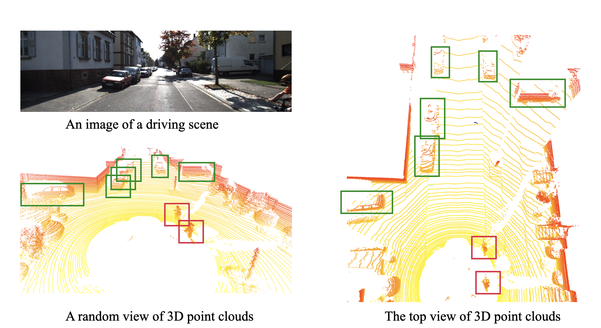

Find cars
Dear users,
Here is a subjective evaluation survey about autonomous driving. Traditional autonomous driving systems use cameras to capture 2D images to detect objects like cars and persons. A novel device, LIDAR, is similar to a camera, but they receive 3D point clouds instead of 2D images to describe spatial information in the physical world better. For comparison, we present a pairwise comparison between an image and point clouds under the same scenes. Although 3D point clouds do not look straightforward like images to the naked eye, we can still see the cars, trees, bicycle drivers, and other objects in the point clouds. We only provide the top view of these 3D point clouds in the survey for simplification. Although the background introduction sounds a bit technical, your task here is easy-to-do and intuitive, finding the car/cars in the following pictures (top views of 3D point cloud) and entering the estimated coordinate of the center of the cars in the survey. Notice that there might be multiple cars in the scenes, so you have to label all of them.
For example, you can enter 3:1, 5:2 in the answer box to represent the number of cars in the corresponding regions
Your answers might help machines better understand cars and contribute much to the research community and We highly appreciate your time and contribution to our project!
